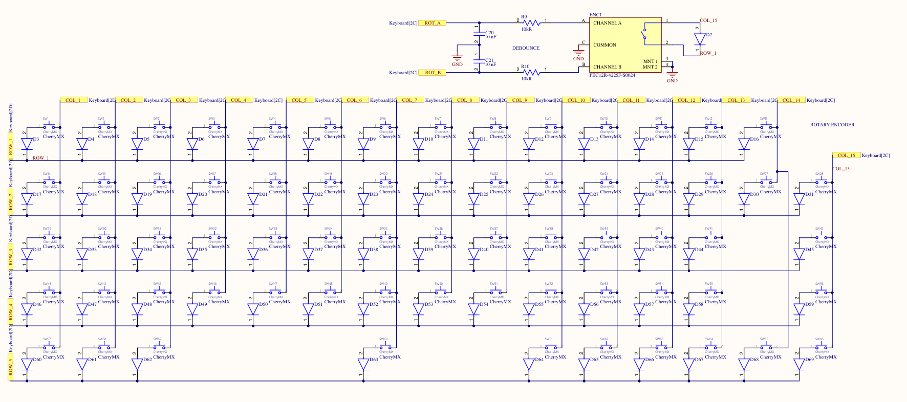

Showdown

Most of this keyboard was designed by myself, meant to show off its unique layout, sound, and aesthetic to immediately catch attention, which is why I named it "Showdown". Everything except for the switches, keycaps, and rotary encoder knob were designed and made to exactly how I wanted this keyboard. I'm very proud of this keyboard - it's also my current favorite.
Designing the keyboard
Since building the budget keyboard and Bakeneko65 , I've been growing more appreciative (and a little jealous) of how good some of by friends' keyboards are. The sound from both keyboards sound a little bit cheap, likely because both cases are printed from PLA rather than other, quality, aluminum cases. Even though I felt like I had some pretty decent switches, being the WS Aurora Fogs on the budget keyboard and Gateron Oil Kings on the Bakeneko65, it really didn't achieve the sound I wanted despite the good typing feel.So the obvious solution was to build my own! First off, I hate how the Bakeneko65 has a piece between the right modifier keys and arrow keys - it pains me how valuable keyboard space was wasted. I also really wanted a rotary encoder to be able to control volume on a whim. Prior to this, I had a setting on QMK to be able to change sound level using the arrow keys + modifier. With a rotary encoder, I can open up those bindings and also have greater control than a keypress.
However, there aren't very many choices on the market that offer both a full 65% layout with a rotary encoder. This Cooler Master keyboard is the closest to the type of board I wanted, but notice the manufacturer still has gaps between the arrow keys and right side of the keyboard. Not only that, but the rotary encoder seems huge, which increases the size of the keyboard. Every other 65% keyboard with a rotary encoder looks much worse in both layout and design compared to this.
That's why I decided to build my own board. There were some errors initially when I sent the design out to get manufactured, which are now fixed on the github. Because of those, there are some wires connecting lines that I didn't do in Altium, pictured here.
The board I ended up with is a 69 key + 1 rotary encoder, 65% ish board. The rotary encoder takes up exactly 1u (1u being the size of a letter keycap) and has zero gaps. On paper, it looks like this:

Notice the rotary encoder also has an additional function for a keypress. But instead of using the full functionality of my keyboard, I ended up buying and regretting a rotary encoder without a pressing function, but oh well.
For the rest of the keyboard, I ended up using a lot of duplicate parts from my previous board (the budget keyboard). It's very similar component-wise, but I think my layout is much better than before. Additionally, I included TVS diodes for ESD, which I really should have added on the previous board as well.
Here's the board after having gotten it back from the manufacturer and assembling it. Compared to the budget keyboard, most of the microcontroller and related are near the spacebar, which gave me a lot more room to work with and ensure I had decent EMI and crosstalk control. Not that it matters too much for lower frequencies, but technically this board is significantly better.
For the case, I really wanted something that would accentuate the thock of a switch. For the longest time, I was trying to find a good substitute for aluminum that I could easily manufacture. Turns out, I didn't need a substitute! My school has several CNC routers that are open to students who've gone through training, at any time. So I spent about a month watching training videos and making followup in-person trainings to use the CNC machines. After that, I bought a huge piece of 1/4" aluminum stock and just designed my own case, then stuck it into the CNC machine and watched it do its magic! Here is the design for the case:
And a cool simulation I'm able to do with the HSMWorks extension on top of SolidWorks:
Since I'm milling just a flat, stock piece of aluminum, I also need some type of elevation in order to angle the keyboard. Although I initially wanted to make it out of aluminum as well, the staff said it would be too much hassle to angle the vice in the CNC machine, even though it was possible. To make sure I had the exact angle I wanted, I decided to make a part to 3d print, since the impact on sound would be near negligible. The angled piece is split up into two in order to fit onto the printer. I also added two screw holes to align with both the case and the board.
Building the Keyboard
The part I made was the case. Although there were some steps in between, setting up a piece of stock and starting the program to mill was very straightforward. It's a little difficult to see because of the coolant spraying everywhere, but here's a video of the milling process.And the finished product:
For my switches, I bought a pack of BSUN Flower Shadows and soldered them into the board. I don't think I like plate mount switches because of the bending that tends to happen, or the fact that the soldered switches sound a little more thocky and vibrant compared to plate mount.

Below the board, I have a 1/8" piece of polyurethane foam. There's not a clear picture of it, but it's the same foam I used for the previous keyboards as well. The 3D printed tilt piece was eventually glued down since the screw holes didn't come out well during tapping the aluminum piece, but it works surprisingly well!
For the stabilizers, I used the Glorious ones again, same as the Bakeneko65. Incredible amounts of rattle, loudness, and scratchiness in these stabilizers truly match the sound of old IBM keyboards. I had to eventually stuff band aids both inside the clip bar and apply regular band aid mods below the stabilizer to ensure proper tolerance and rattle. You can see a little bit poking out in the image, but know that the entire thickness of a band aid was needed just to make sure it wouldn't rattle.
I got a beautiful set of KAM Superuser, dyesub PBT keycaps. I was able to get one on r/Mechmarket for a decent price, which also came with a free set of oil kings that I put into the Bakeneko65.
The Typing Test
Fully assembled with a generic rotary encoder knob I found on Cannonkeys, here is what the keyboard looks like:
And here is what it sounds like:
As you can hear, the stabilizers need some serious work. Even with the band aid mods and lube, you can still hear a decent amount of rattle when bottoming out, and a huge amount when the stabilizers bounce back. At around 32 seconds into the video, I don't lift up my thumb from the spacebar when depressing, and you can hear how huge of a difference it is with proper dampening of the rattle, which really shouldn't exist in the first place. On the other hand, the keys have a solid, but reverberating sound thats reminiscent of the last bits of water dripping after a rainstorm. The keys are on the louder side on account of being completely open on the sides, but clicks in a pleasant way that doesn't sound annoying or dull.
However, both the switches and keycaps (not including stabilizers) feel incredible. The flower shadow switches are buttery smooth, but not in the way lubed switches are. I'm not sure if it's the material in the housing or tolerance for the stem, but the thin amount of factory lube in combination with it makes these switches feel near frictionless. The keycaps feel like a very smooth paint - just enough grip to let your fingers rest without slipping. For the rotary encoder, the one I picked up from LCSC turned out to be quite decent. With the Cannonkeys knob, the rotary encoder feels very natural to turn with its perfect balance of grip, resistance, and nubs to very accurately and quickly turn the volume up 6-8 times in a single, comfortable motion.
Some improvements definitely would definitely include changing the way the keyboard is mounted (currently just placed on top of foam, with just two screws making sure it doesn't slide), making some walls to dampen the overall sound and produce more thock, and picking a stabilizer which isn't horrendous. One potential, future project would to be able some form of energy harvesting keyboard, like an electromechanical or 2.4GHz harvesting and make a truly wireless keyboard with BLE capability.